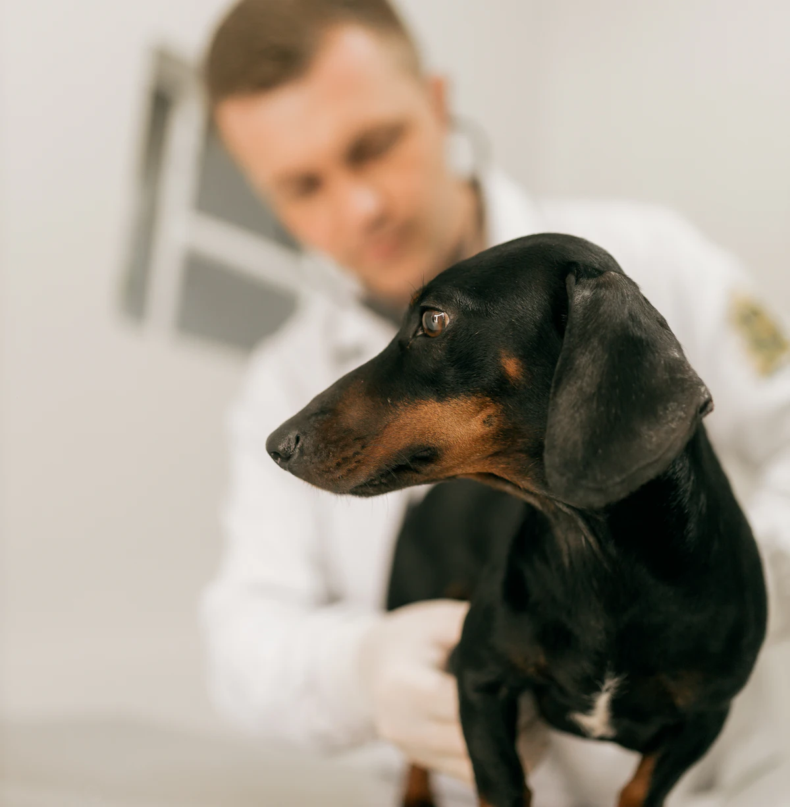
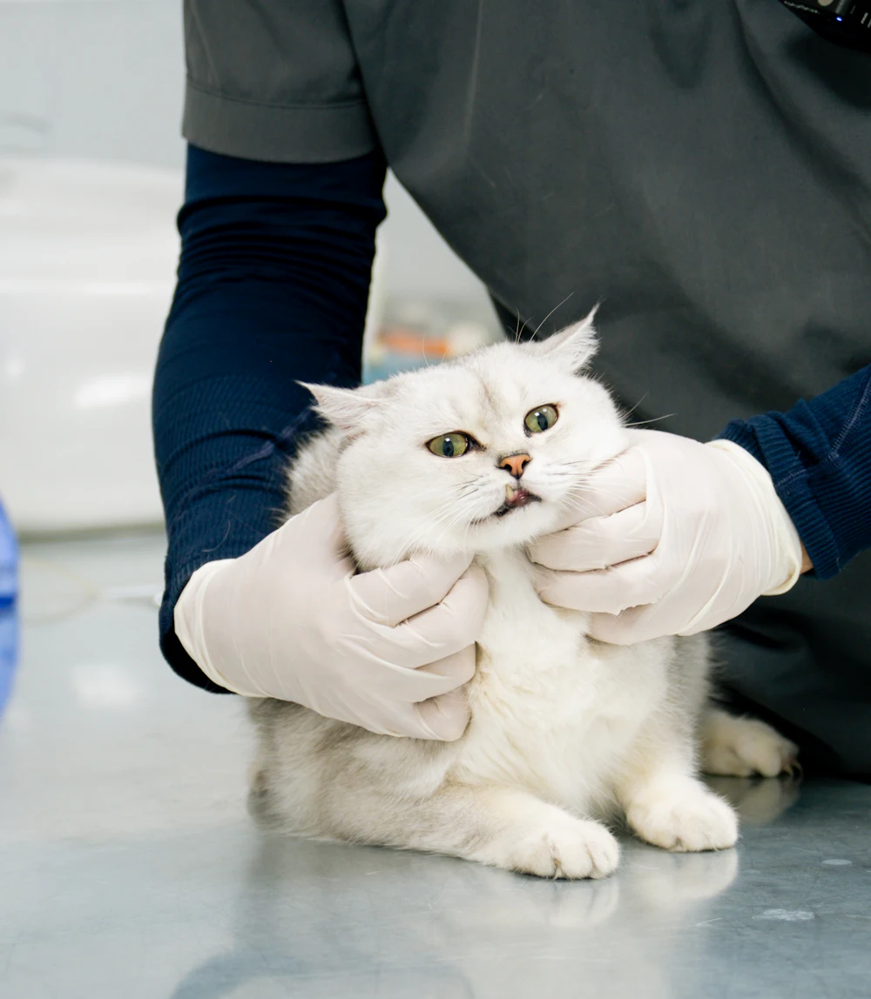
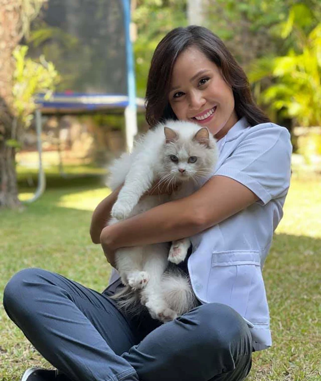
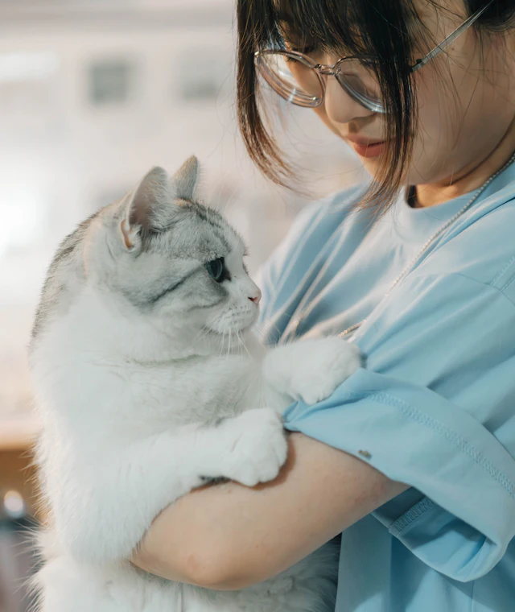

Consulta general
Examen completo, peso y un plan por escrito para tu mascota.
S/ 70Precio de ejemplo
Ver qué incluye: Consulta generalProyecto ficticio / demo — no brinda atención veterinaria real
¿Es una emergencia? Guardia las 24 horas, también feriados. Qué hacer ahora →Clínica veterinaria · Surco, Lima Demo
Consultas, vacunas, cirugía y guardia las 24 horas. Con precios publicados y un presupuesto antes de cualquier procedimiento.
Guardia presencial las 24 h, también feriados

Guardia 24 h
Si ves una de estas señales, no esperes a mañana.
Ir a EmergenciasConsultas con cita
Pedir cita toma menos de un minuto y no hace falta llamar.
Pedir citaPrecios de ejemplo, en soles y con IGV. Si el precio depende del peso, te decimos de qué depende.
Examen completo, peso y un plan por escrito para tu mascota.
S/ 70Precio de ejemplo
Ver qué incluye: Consulta generalEsquemas para cachorros y gatitos, y refuerzos anuales según su carnet.
desde S/ 60Precio de ejemplo
Ver qué incluye: VacunasEvaluación previa, anestesia monitoreada y control a los 10 días.
desde S/ 380Precio de ejemplo
Ver qué incluye: EsterilizaciónHemograma y bioquímica con resultados el mismo día.
desde S/ 60Precio de ejemplo
Ver qué incluye: LaboratorioCon anestesia y revisión pieza por pieza. Incluye evaluación previa.
desde S/ 320Precio de ejemplo
Ver qué incluye: Limpieza dentalAbdominal, con informe explicado en la misma consulta.
S/ 120Precio de ejemplo
Ver qué incluye: Ecografía
Los ves antes de venir. Si hace falta algo más, te lo cotizamos antes de hacerlo.
Separada de los perros, para que llegue más tranquilo a la consulta.
No es solo un teléfono de guardia: hay alguien en la clínica las 24 horas.
Desde el formulario, en menos de un minuto.
Carnet de vacunas y exámenes previos, si los tienes.
Antes de cualquier procedimiento, sabes cuánto cuesta.
Te vas con el plan y las dosis en papel y por mensaje.

Dirección médica y medicina interna
Equipo ficticioCirugía y odontología
Equipo ficticio
Medicina felina y conejos
Equipo ficticioAtendemos perros, gatos y conejos. No atendemos aves, reptiles ni otros exóticos: te recomendamos buscar un especialista.
Para consultas sí, así no esperas. Para emergencias, no: ven directamente.
Efectivo, tarjeta de débito o crédito y transferencia. Te damos el presupuesto antes de empezar.
Sí, en la consulta siempre. En cirugía te avisamos en cuanto despierte.
Hay un veterinario en la clínica toda la noche. Revisa la página de Emergencias antes de salir.